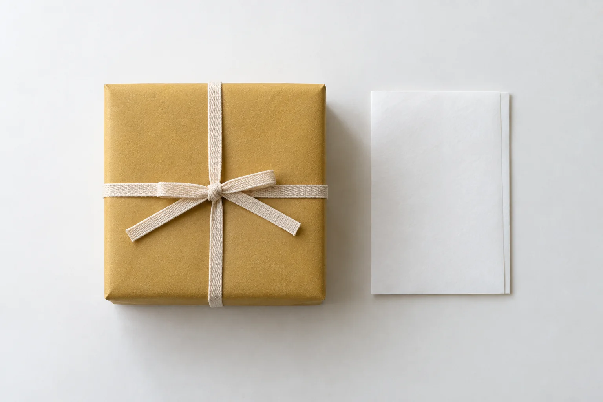

いまは、秋分。栗の実りを、琥珀に沈めて。
次は寒露、
おすすめ
常温便・冷蔵便でお届けします。店頭のみの生菓子は、その日のうちにお召し上がりください。
二十四節気
いまの節気、秋分
9月23日から10月7日ごろまで
望月
琥珀羹
蜜で炊いた能登の栗をひと粒、琥珀羹に沈めました。まるい栗を、秋の夜の月に見立てています。
暦は立春から始まり、右から左へ進みます。節気の切り替わりは年によって一日ほど前後するため、ここでは例年の日付で区切り、日本時間の今日の日付から現在の節気を求めています。ひとつの菓子は、一つから三つの節気にわたってお作りします。ページ冒頭の帯も同じ暦です。
包装と熨斗

贈りものには、黄土色の包み紙に木綿の紐をかけてお渡しします。熨斗は用途をうかがい、ふさわしい水引と表書きでお付けします。
表書きとお名前は、筆耕の者が一枚ずつ書き入れます（無料）。内のし、外のしのどちらかをお選びください。
花月庵のこと
明治四十年の春、初代の松居宗七が、浅野川のほとり主計町に小さな菓子屋を開きました。朝に炊いたあんを、その日のうちに練切や薯蕷にしてお売りしたのが始まりです。
屋号の「花月」は、花の頃には花の、月の頃には月の菓子をつくるという、初代の決めごとから取りました。春には桜と若葉を、秋には栗と紅葉を。
あんはいまも毎朝、店の奥の銅鍋で炊いています。栗は能登から、小豆は十勝から、和三盆は阿波から。季節が移るたびに、木型と色を選び直します。
四代目となったいまも、つくる数は多くありません。その日の菓子は、その日のうちに。百十九年、それだけを守ってまいりました。
四代目 松居宗一郎
店舗
ただいま営業中
本日は十八時まで営業しております。
金沢はいま 午後二時